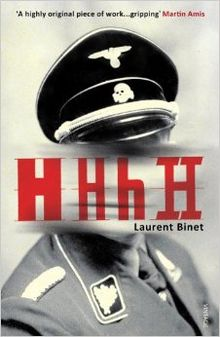

The novel follows the history of the operation and the lives of its protagonists—Reinhard Heydrich and his assassins Jozef Gabčík and Jan Kubiš. But it is also interlaced with the author's account of the process of researching and writing the book, his commentary about other literary and media treatments of the subject, and reflections about the extent to which the behavior of real people may of necessity be fictionalised in a historical novel
